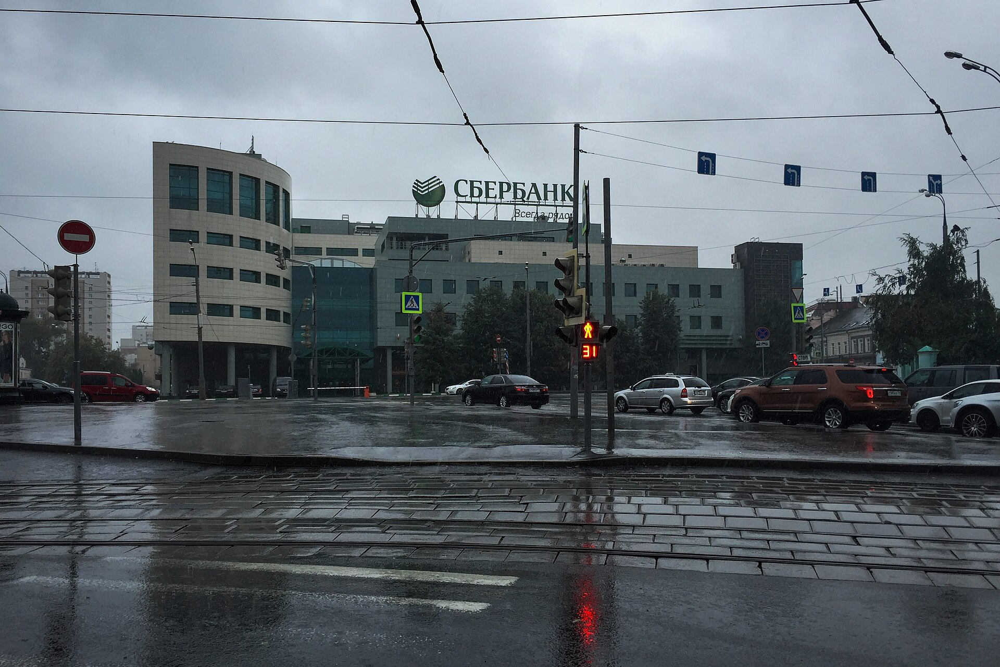
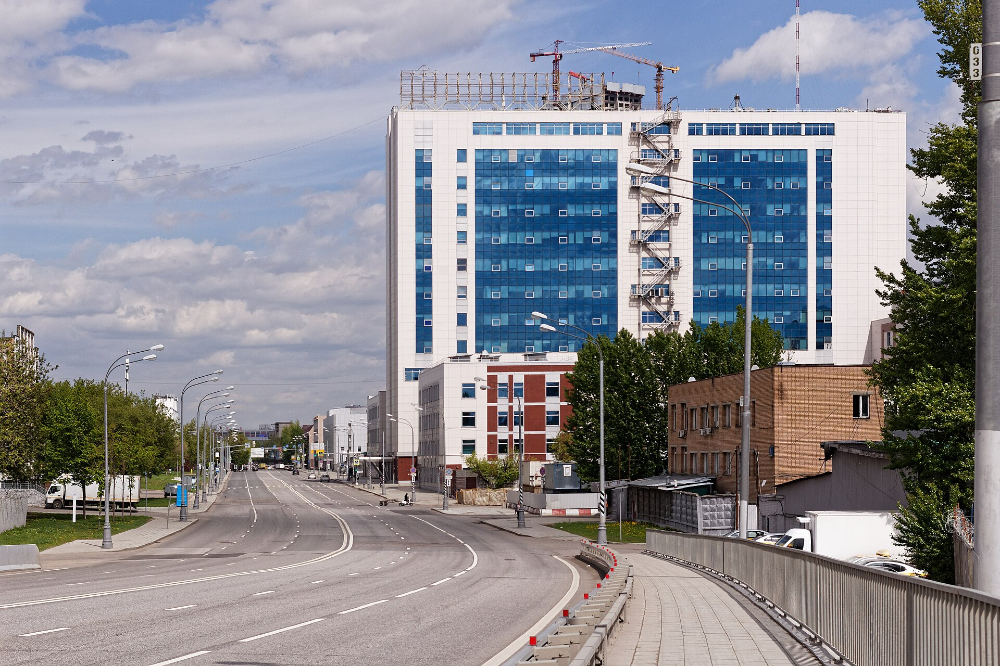

<!doctype html><html><head><meta charset="utf-8">
<!-- PRO Пт 06.11 #АКТИВ_НЕДЕЛИ — Сбербанк, Россия + США (уроки 03.11: два рынка, ≥2 графика, блоки «почему/связь», цепочка, общий вывод).
     Палитра пятницы — тёмная с золотом (как fric-sq.html). Квадрат 1080 → 1620: node render-sq.js fri-0611-sq.html fsb <папка>.
     Цифры — pro_queue/2026-11-06/manifest.json (note). Цены — закрытие 02.11; перед выходом обновить (P ниже). -->
<link href="fonts/fonts.css" rel="stylesheet">
<style>
*{box-sizing:border-box;margin:0;padding:0}
body{background:#222;font-family:Inter}
.s{width:1080px;height:1080px;position:relative;overflow:hidden;margin:0 0 20px;background:radial-gradient(900px 640px at 80% 14%,#123A22,#0B110E 72%);color:#ECE6D6}
.s>*{position:absolute}
.hd{z-index:5;left:60px;right:60px;top:48px;display:flex;align-items:center;justify-content:space-between}
.hd .lg{display:flex;align-items:center;gap:14px;font:800 22px Inter;letter-spacing:.14em;color:#ECE6D6}
.hd .lg img{width:44px;height:44px;border-radius:11px}
.hd .tag{font:800 22px Inter;letter-spacing:.08em;padding:9px 20px;border-radius:99px;background:#C9A24B;color:#0D1110}
.k{left:60px;top:132px;font:800 21px Inter;letter-spacing:.14em;text-transform:uppercase;color:#3DCB66}
.bl{right:60px;top:122px;height:40px}
h1{left:60px;right:60px;top:172px;font:800 54px/1.08 Inter;letter-spacing:-.025em;color:#fff}
.src{left:60px;right:200px;bottom:96px;font:500 18px/1.35 Inter;color:rgba(236,230,214,.62)}
.cnt{right:60px;bottom:96px;font:800 22px Inter;color:#C9A24B}
.ft{left:0;right:0;bottom:0;height:68px;display:flex;flex-direction:column;align-items:center;justify-content:center;font:500 14px/1.5 Inter;background:#060807;color:rgba(255,255,255,.45)}
.pc{background:#fff;padding:12px 12px 44px;box-shadow:0 20px 44px rgba(0,0,0,.5);z-index:3}
.pc img{display:block;width:100%;height:100%;object-fit:cover}
.pc p{position:absolute;left:14px;right:14px;bottom:11px;font:600 17px Inter;color:#333}
.cap{left:60px;font:600 20px Inter;color:#C9BFA8}
.lgd{display:inline-flex;align-items:center;gap:8px;margin-right:22px}.lgd i{width:18px;height:18px;border-radius:4px;display:inline-block}
.price{left:56px;font:800 130px/1 'JetBrains Mono';letter-spacing:-.04em;color:#fff}
.chips{left:60px;right:60px;display:flex;gap:12px;flex-wrap:wrap}
.chips span{font:700 23px 'JetBrains Mono';padding:9px 16px;border:2px solid #E0574B;color:#FF8A7E;border-radius:10px}
.chips span.up{border-color:#2FB880;color:#3ADF9A}
.note{left:60px;right:60px;background:#13201A;border:1px solid #234030;border-radius:20px;padding:22px 28px;font:500 28px/1.36 Inter;color:#ECE6D6}
.note b{color:#3DCB66}
.tiles{left:60px;right:60px;display:grid;grid-template-columns:1fr 1fr;gap:14px}
.tl{background:#13201A;border:1px solid #234030;border-radius:18px;padding:16px 20px}
.tl b{display:block;font:800 40px 'JetBrains Mono';letter-spacing:-.03em;color:#fff}
.tl span{display:block;font:500 25px/1.3 Inter;margin-top:6px;color:#D8D0BC}
.up{color:#3DDC97}.dn{color:#FF8A7E}
.why{left:60px;right:60px;border-left:7px solid #21A038;background:#13201A;border-radius:0 18px 18px 0;padding:20px 26px;font:500 29px/1.36 Inter;color:#F2EEE4}
.why b{font-weight:800;color:#3DCB66}
.ch{left:60px;right:60px;display:flex;flex-direction:column}
.cn{display:flex;gap:22px;align-items:center;background:#13201A;border:1px solid #234030;border-radius:18px;padding:12px 22px}
.cn em{flex:none;width:54px;height:54px;border-radius:14px;background:#21A038;color:#fff;font:800 26px/54px 'JetBrains Mono';font-style:normal;text-align:center}
.cn div{font:500 24px/1.3 Inter;color:#D8D0BC}.cn div b{display:block;font:800 27px/1.2 Inter;margin-bottom:2px;color:#fff}
.ar{height:20px;margin-left:42px;border-left:4px solid #21A038;position:relative}.ar:after{content:'';position:absolute;left:-11px;bottom:-4px;border:9px solid transparent;border-top:11px solid #21A038}
.tb{left:60px;right:60px;border-top:2px solid #21A038}
.tb .r{display:grid;grid-template-columns:330px 1fr 1fr;gap:16px;align-items:baseline;padding:12px 0;border-bottom:1px solid rgba(61,203,102,.3);font:600 25px/1.3 Inter;color:#C9BFA8}
.tb .r b{font:800 30px 'JetBrains Mono';color:#fff;letter-spacing:-.03em}
.tb .r.h{padding:12px 0}.tb .r.h img{height:34px}
.sc .r{display:flex;gap:20px;align-items:baseline;padding:12px 0;border-top:1px solid rgba(61,203,102,.3)}
.sc .r b{flex:none;width:150px;font:800 28px Inter}
.sc .r span{font:500 26px/1.3 Inter;color:#D8D0BC}
</style></head><body>
<script>
const LOGO='img/logo192.png', COPY='© Пульс рынка, 2026. Только для личного использования подписчика. Распространение запрещено';
const T='АКТИВ НЕДЕЛИ', N=7, GOLD='#3DCB66', GREEN='#3BA4F0', SBL='img/sber-logo.svg', JPL='img/jpm-logo.svg', LINE='rgba(236,230,214,.18)';
function S(id,inner,src,n,ph,bl=SBL){return `<div class="s" id="${id}"><div class="hd"><div class="lg">ПУЛЬС РЫНКА</div><div class="tag">${T}</div></div>${bl?``:''}${inner}
<div class="src">${src}</div><div class="cnt">${n} / ${N}${n<N?' →':''}</div><div class="ft"><div>${COPY}</div><div>${ph}${bl?' · логотип — Wikimedia Commons, PD':''}</div></div></div>`}
const f=v=>String(v).replace('.',',').replace('-','−');
/* недельные закрытия: SBER — Мосбиржа ISS (TQBR), JPM — NYSE (Yahoo Finance) */
const SB=[["05-08",320.39],["05-15",322.98],["05-22",322.46],["05-29",320.57],["06-05",322.19],["06-11",321.2],["06-19",312.84],["06-26",299.18],["07-03",301.19],["07-10",290.85],["07-17",279.92],["07-24",267.6],["07-31",276.52],["08-07",282.5],["08-14",273.4],["08-21",273.33],["08-28",268.14],["09-04",280.68],["09-11",283.32],["09-18",276.74],["09-25",276.35],["10-02",275.45],["10-09",285.02],["10-16",287.29],["10-23",292.32],["10-30",296.25],["11-02",290.8]];
const JP=[["05-08",302.1],["05-15",297.81],["05-22",306.38],["05-29",299.31],["06-05",312.37],["06-12",320.72],["06-18",325.22],["06-26",329.05],["07-02",334.47],["07-10",336.47],["07-17",341.1],["07-24",353.21],["07-31",351.79],["08-07",357.52],["08-14",362.84],["08-21",351.58],["08-28",357.62],["09-04",358.64],["09-11",356.23],["09-18",349.67],["09-25",343.06],["10-02",332.38],["10-09",332.99],["10-16",339.72],["10-23",331.58],["10-30",337.04],["11-02",340.58]];
const P={px:'290,80',date:'02.11',d:'▼ 1,8% за день',w:'▼ 0,5% за неделю',mx:'▼ 11,2% от максимума'};
const MON=['','янв','фев','мар','апр','мая','июн','июл','авг','сен','окт','ноя','дек'];
function line(data,W,H,lo,hi,col,sw){const k=(H)/(hi-lo),dx=W/(data.length-1);return data.map(([d,v],i)=>`${i?'L':'M'}${(i*dx).toFixed(1)},${(H-(v-lo)*k).toFixed(1)}`).join(' ')}
const out=[];
const MSFO='Сбер, МСФО за 9 мес., 28.10 (Reuters)';

/* 1 · обложка */
out.push(S('fsb1',`
 <div class="k">Актив недели · Россия и США</div>
 <div class="pc" style="left:700px;top:118px;width:320px;height:250px;transform:rotate(4deg)"><p>Сбербанк, Москва</p></div>
 
 <div class="cap" style="top:262px;font-size:22px">₽ за акцию · Мосбиржа, SBER · закрытие ${P.date}</div>
 <div class="price" style="top:306px">${P.px}</div>
 <div class="chips" style="top:452px"><span>${P.d}</span><span>${P.w}</span><span>${P.mx}</span></div>
 <div class="note" style="top:540px">🇷🇺 Прибыль за 9 месяцев <b>+17%</b>, а акция почти на <b>11%</b> ниже апрельского максимума: цену держит ставка ЦБ <b>14%</b>.<br>🇺🇸 Крупнейший банк США <b>JPMorgan</b> за полгода вырос на <b>13%</b> — при ставке ФРС <b>3,75–4%</b>.</div>
 <div class="cap" style="top:770px;right:60px;font-size:30px;line-height:1.34;color:#fff"><b style="color:${GOLD}">Главный вопрос:</b> почему сильный отчёт не поднимает цену — и что изменит решение ЦБ 18 декабря.</div>
 <div class="cap" style="top:880px;font-weight:800;letter-spacing:.1em;text-transform:uppercase;font-size:20px;color:${GOLD}">График · отчёт · цепочка · Сбер и JPMorgan · сценарии</div>`,
 'Цена — Мосбиржа ISS · JPMorgan — NYSE · ставки — Банк России 23.10, ФРС 28.10',1,'Фото: Gennady Grachev, CC BY 2.0, обр. (Wikimedia Commons) · логотип — Wikimedia Commons, PD','')); 

/* 2 · график цены SBER */
{const W=960,H=330,lo=255,hi=330,d=line(SB,W,H,lo,hi),dx=W/(SB.length-1),k=H/(hi-lo);
const y=v=>(H-(v-lo)*k).toFixed(1);
const grid=[260,280,300,320].map(v=>`<line x1="0" x2="${W}" y1="${y(v)}" y2="${y(v)}" stroke="${LINE}"/><text x="${W}" y="${+y(v)-6}" font-family="JetBrains Mono" font-size="18" fill="#9A927F" text-anchor="end">${v}</text>`).join('');
const ticks=SB.map(([d],i)=>[d,i]).filter(([d],i)=>i%4==0).map(([d,i])=>`<text x="${i*dx}" y="${H+30}" font-family="Inter" font-size="18" fill="#9A927F" text-anchor="middle">${+d.slice(3)} ${MON[+d.slice(0,2)]}</text>`).join('');
const mi=11,la=SB.length-1;
out.push(S('fsb2',`
 <div class="k">🇷🇺 Цена за полгода · ₽ за акцию</div>
 <h1>Провал летом, отскок<br>после отчёта</h1>
 <svg style="position:absolute;left:60px;top:330px;overflow:visible" width="${W}" height="${H+40}">${grid}
  <path d="${d} L${W},${H} L0,${H} Z" fill="rgba(33,160,56,.16)"/><path d="${d}" fill="none" stroke="${GOLD}" stroke-width="5" stroke-linejoin="round"/>
  <circle cx="${mi*dx}" cy="${y(SB[mi][1])}" r="9" fill="#FF8A7E"/><text x="${mi*dx}" y="${+y(SB[mi][1])+40}" font-family="JetBrains Mono" font-size="24" font-weight="800" fill="#FF8A7E" text-anchor="middle">267,6</text>
  <circle cx="${la*dx}" cy="${y(SB[la][1])}" r="9" fill="#fff"/><line x1="${la*dx}" x2="${la*dx}" y1="${+y(SB[la][1])-12}" y2="${y(306)}" stroke="#fff" stroke-width="2" stroke-dasharray="4 4"/><text x="${la*dx}" y="${y(308)}" font-family="JetBrains Mono" font-size="28" font-weight="800" fill="#fff" text-anchor="end">${P.px}</text>${ticks}</svg>
 <div class="why" style="top:738px"><b>Почему важно.</b> Летом акция теряла до 17% от майского уровня — рынок ждал более быстрого снижения ставки, а ЦБ не спешил. С сентября цена растёт: отчёты показали, что прибыль растёт и при ставке 14%.</div>`,
 'Источник: Мосбиржа ISS, SBER, режим TQBR, закрытия по неделям',2,'Инфографика — Пульс рынка'));}

/* 3 · отчёт */
out.push(S('fsb3',`
 <div class="k">🇷🇺 Отчёт по МСФО · 28 октября</div>
 <h1 style="right:330px">Прибыль растёт даже при дорогих деньгах</h1>
 <div class="pc" style="left:800px;top:186px;width:220px;height:170px;transform:rotate(5deg)"><p>Офис Сбера</p></div>
 <div class="tiles" style="top:380px">
  <div class="tl"><b>1,53 трлн ₽</b><span>прибыль за 9 мес., <i class="up" style="font-style:normal;font-weight:800">+17%</i> за год</span></div>
  <div class="tl"><b>24%</b><span>рентабельность капитала (ROE)</span></div>
  <div class="tl"><b>6,65%</b><span>маржа за квартал, <i class="dn" style="font-style:normal;font-weight:800">−0,04 п.</i></span></div>
  <div class="tl"><b>5,3%</b><span>проблемные кредиты (3-я стадия)</span></div>
 </div>
 <div class="why" style="top:690px"><b>Как читать.</b> Маржа — разница ставок по кредитам и вкладам. Она почти не сжалась, кредиты не испортились — банк ждёт около <b>2 трлн ₽</b> прибыли за год (1,69 трлн за <span style="white-space:nowrap">2025-й</span>). Риск — рост проблемных кредитов, если ставка надолго останется высокой.</div>`,
 'Источник: '+MSFO,3,'Фото: Retired electrician, CC0 (Wikimedia Commons)'));

/* 4 · цепочка */
out.push(S('fsb4',`
 <div class="k">🇷🇺 Взаимосвязи · от ставки к дивиденду</div>
 <h1>Цепочка: от ставки ЦБ до 44 ₽</h1>
 <div class="ch" style="top:296px">
  <div class="cn"><em>1</em><div><b>Ставка ЦБ — 14%</b>решение 23.10; следующее — 18 декабря</div></div><div class="ar"></div>
  <div class="cn"><em>2</em><div><b>Вклады и кредиты</b>выше ставка — дороже вклады и слабее спрос на кредиты</div></div><div class="ar"></div>
  <div class="cn"><em>3</em><div><b>Маржа 6,65% → прибыль ~2 трлн ₽ за год</b>маржа держится — прибыль растёт; сожмётся — замедлится</div></div><div class="ar"></div>
  <div class="cn"><em>4</em><div><b>Дивиденд — половина прибыли</b>наш расчёт: 2 трлн × 50% ≈ <span style="color:${GOLD};font-weight:800">44 ₽</span> на акцию за 2026 год (за 2025-й — 37,64 ₽); решают акционеры</div></div>
 </div>
 <div class="why" style="top:790px"><b>Цена денег.</b> 44 ₽ к цене ${P.px.split(',')[0]} ₽ — около 15% до налога, почти как ставка ЦБ. Поэтому акция и вклад сейчас конкурируют.</div>`,
 'Источники: Банк России 23.10 · '+MSFO+' · Греф, 03.09 (Reuters) · расчёт — Пульс рынка',4,'Инфографика — Пульс рынка'));

/* 5 · Сбер против JPMorgan, база 100 */
{const W=960,H=290,lo=80,hi=125,k=H/(hi-lo),dx=W/(SB.length-1);const n0=a=>a.map(([d,v])=>[d,v/a[0][1]*100]);
const s=n0(SB),j=n0(JP),y=v=>(H-(v-lo)*k).toFixed(1);
const grid=[80,90,100,110,120].map(v=>`<line x1="0" x2="${W}" y1="${y(v)}" y2="${y(v)}" stroke="${v==100?'rgba(236,230,214,.45)':LINE}" ${v==100?'stroke-dasharray="8 8"':''}/><text x="0" y="${+y(v)-6}" font-family="JetBrains Mono" font-size="18" fill="#9A927F">${v}</text>`).join('');
const ticks=SB.map(([d],i)=>[d,i]).filter(([d],i)=>i%4==0).map(([d,i])=>`<text x="${i*dx}" y="${H+30}" font-family="Inter" font-size="18" fill="#9A927F" text-anchor="middle">${+d.slice(3)} ${MON[+d.slice(0,2)]}</text>`).join('');
const la=SB.length-1,ls=s[la][1],lj=j[la][1];
out.push(S('fsb5',`
 <div class="k">🇷🇺🇺🇸 Цена · 8 мая = 100</div>
 <h1>Два крупнейших банка —<br>разные ставки, разный путь</h1>
 <svg style="position:absolute;left:60px;top:330px;overflow:visible" width="${W}" height="${H+40}">${grid}
  <path d="${line(j,W,H,lo,hi)}" fill="none" stroke="${GREEN}" stroke-width="5" stroke-linejoin="round"/>
  <path d="${line(s,W,H,lo,hi)}" fill="none" stroke="${GOLD}" stroke-width="5" stroke-linejoin="round"/>
  <text x="${W}" y="${+y(lj)-16}" font-family="JetBrains Mono" font-size="26" font-weight="800" fill="${GREEN}" text-anchor="end">JPMorgan +${f((lj-100).toFixed(1))}%</text>
  <text x="${W}" y="${+y(ls)+38}" font-family="JetBrains Mono" font-size="26" font-weight="800" fill="${GOLD}" text-anchor="end">Сбер ${f((ls-100).toFixed(1))}%</text>${ticks}</svg>
 <div class="cap" style="top:116px;left:auto;right:60px;display:flex;gap:22px;align-items:center"><span class="lgd"><i style="background:${GOLD}"></i></span><span class="lgd"><i style="background:${GREEN}"></i></span></div>
 <div class="why" style="top:690px"><b>Связь.</b> В США ставку в сентябре подняли до 3,75–4% — банку это плюс: процентный доход JPMorgan за квартал <b>+13%</b>. В России ставка 14%, и рынок ждёт снижения — оно удешевит Сберу вклады и оживит кредит.</div>`,
 'Источники: Мосбиржа ISS · NYSE (Yahoo Finance) · ФРС, 28.10 · JPMorgan, 8-K за III кв. 2026',5,'Инфографика — Пульс рынка · логотипы — Wikimedia Commons, PD',''));}

/* 6 · сравнение */
out.push(S('fsb6',`
 <div class="k">🇺🇸🇷🇺 Сравнение · главные цифры</div>
 <h1>Сбер и JPMorgan: в чём отличие</h1>
 <div class="tb" style="top:280px">
  <div class="r h"><span></span><span></span><span></span></div>
  <div class="r"><span>Ставка регулятора</span><b>14%</b><b>3,75–4%</b></div>
  <div class="r"><span>Следующее решение</span><b>18.12</b><b>09.12</b></div>
  <div class="r"><span>Рентабельность капитала</span><b>24%</b><b>20%*</b></div>
  <div class="r"><span>Прибыль</span><b style="font-size:24px">1,53 трлн ₽ · 9 мес.</b><b style="font-size:24px">15,3 млрд $ · кв.</b></div>
  <div class="r"><span>Цена за полгода</span><b class="dn">−9%</b><b class="up">+13%</b></div>
 </div>
 <div class="cap" style="top:690px;font-size:18px">* ROTCE — рентабельность материального капитала, III кв. 2026</div>
 <div class="why" style="top:722px"><b>Отличие от США.</b> Сбер зарабатывает на капитал больше, но стоит дешевле: при ставке 14% инвесторы ждут высокой доходности от любой акции. В США ставка втрое ниже — за ту же прибыль платят дороже.</div>`,
 'Источники: Банк России 23.10 · ФРС 28.10 · '+MSFO+' · JPMorgan, 8-K за III кв. 2026',6,'Инфографика — Пульс рынка · логотипы — Wikimedia Commons, PD',''));

/* 7 · сценарии и общий вывод */
out.push(S('fsb7',`
 <div class="k">Сценарии на месяц · если… → то</div>
 <h1>Что общего у двух рынков</h1>
 <div class="note" style="top:256px">Один фактор для обоих банков — <b>цена денег</b>. В США ставка растёт — банк зарабатывает на процентах. В России она высокая — прибыль есть, но инвесторы ждут снижения ставки.</div>
 <div class="sc" style="position:absolute;left:60px;right:60px;top:430px">
  <div class="r"><b class="up">▲ Вверх</b><span>если рынок поверит в снижение ставки 18.12, а прибыль идёт по плану ~2 трлн ₽</span></div>
  <div class="r"><b style="color:#C9BFA8">● База</b><span>коридор вокруг текущей цены до решения ЦБ; ориентиры — 276 и 296 ₽ (недавние минимум и максимум)</span></div>
  <div class="r"><b class="dn">▼ Вниз</b><span>если ставка останется надолго, а проблемных кредитов (сейчас 5,3%) станет больше</span></div>
  <div class="r"><b style="color:${GREEN}">🇺🇸 Фон</b><span>решение ФРС 9 декабря: новый подъём ставки поддержит банки США, но ударит по аппетиту к риску в мире</span></div>
 </div>
 <div class="why" style="top:832px"><b>Вывод.</b> Отчёт сильный — дальше цену двигает ставка ЦБ.</div>`,
 'Сценарии — условия, а не прогноз · уровни — ориентиры по графику Мосбиржи',7,'Инфографика — Пульс рынка'));

document.write(out.join(''));
</script></body></html>
